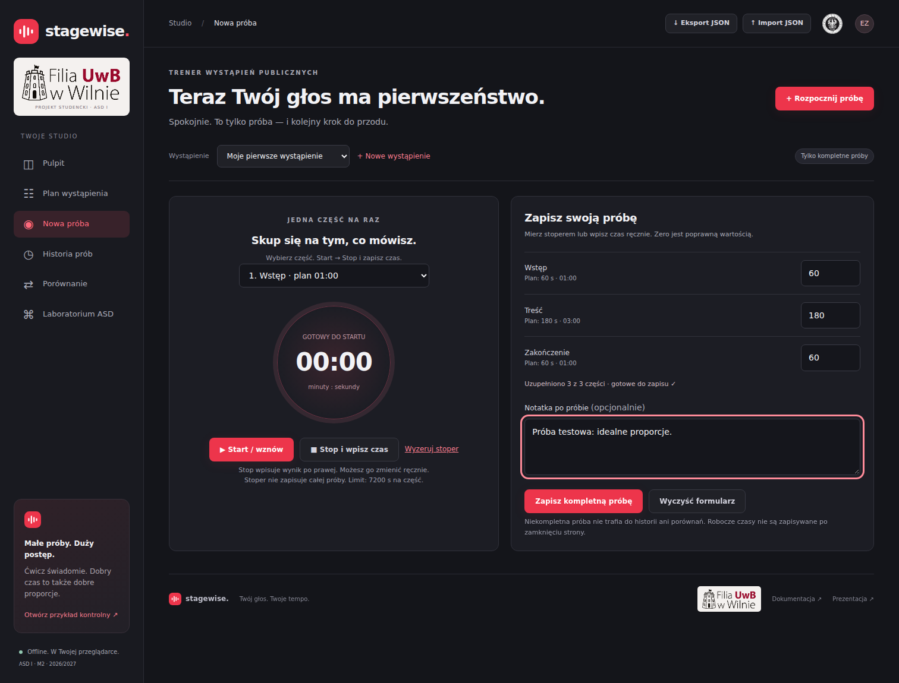

01 / CEL
Twój głos.
Twoje tempo.
Trener wystąpień publicznych
Stagewise · ASD1-M2-13 · Mini-projekt M2
Edvin Zenevič · Algorytmy i struktury danych I · 2026/2027
 stagewise.
stagewise.

01 / CEL
Trener wystąpień publicznych
Stagewise · ASD1-M2-13 · Mini-projekt M2
Edvin Zenevič · Algorytmy i struktury danych I · 2026/2027
stagewise.02 / PROBLEM
UŻYTKOWNIK
Wstęp się wydłuża. Podsumowanie znika. Łączny czas czasem nadal wygląda dobrze.
stagewise.03 / ZAKRES
Wiele wystąpień, części, kolejność, czas 1–3600 s.
Start/stop, ręczny wpis 0–7200 s, kompletna próba i notatka.
Ranking |Δ|, porównanie dwóch prób, historia i wykres.
Reguły: brak częściowych zapisów · remis bez zwycięzcy · zmiana planu chroni historię · import po walidacji i potwierdzeniu.
stagewise.04 / MODEL DANYCH
id: S-KONTROLA title: Moje wystąpienie
id: P-WSTEP speechId: S-KONTROLA order: 1 name: Wstęp plannedSeconds: 60
id: A
speechId: S-KONTROLA
number: 1
actualSeconds: {…}
note: Za długoDo 1000 rekordów każdego rodzaju. ID niepuste, unikalne, niezmienne. Próba zawiera czas każdej części.
stagewise.05 / ALGORYTM
dla i = 1 … n−1:
klucz = lista[i]; j = i−1
dopóki j ≥ 0:
licznik += 1
jeżeli porównaj(lista[j], klucz) ≤ 0: przerwij
lista[j+1] = lista[j]; j = j−1
lista[j+1] = kluczRanking: |Δ| malejąco, potem kolejność rosnąco.
O(p) dla uporządkowanych, O(p²) w najgorszym przypadku.
Wstęp, treść, koniec → porównaj 10 z 20 → przesuń wstęp → wstaw treść.
Ranking: treść → wstęp → koniec.
Dwa porównania kluczy.
Wyszukiwanie liniowe po ID: pierwsze dopasowanie, licznik faktycznej pętli. O(t), pamięć O(1).
stagewise.06 / TECHNOLOGIA
Otwórz index.html — bez budowania i internetu.
ui / views → model / algorithms
timer / scenarios → storage / JSON
Własne SVG. Klasyczne skrypty. Oddzielona logika, widoki i zapis.
JSON: format stagewise, version 1.
localStorage to dodatek, nie kopia zapasowa.
stagewise.07 / INTERFEJS

DROGA UŻYTKOWNIKA
Własny zrzut z testu file://.
Etykiety, klawiatura, widoczny fokus.
390 / 768 / 1512 px.
stagewise.08 / TESTY
testów domenowych PASS
kontroli przeglądarki PASS
sortowań zgodnych ze wzorcem
| n | Uporządkowane | Odwrócone | Pseudolosowe |
|---|---|---|---|
| 10 | 9 | 45 | 26 |
| 100 | 99 | 4950 | 2505 |
| 1000 | 999 | 499500 | 252410 |
Wyszukiwanie 1000 prób: początek 1 / koniec 1000 / brak 1000. Kontrolne: A 40 s, B 10 s; poprawa 30 s.
stagewise.09 / WNIOSKI
Karta ASD1-M2-13; MDN Performance.now i localStorage; GitHub Docs. Pełne odnośniki w README i PDF.
OpenAI Codex / OpenClaw: kod, styl, testy i dokumenty. Testy uruchomił asystent. Zlecający wybrał temat i paletę. Własne zmiany i weryfikację studenta należy opisywać zgodnie z faktycznym przebiegiem.
stagewise.10 / POKAZ
Wersja: m2-v1.0.0
Link repozytorium wpisz osobno w Dzienniku.
Repozytorium prywatne: prowadzący musi mieć dostęp.